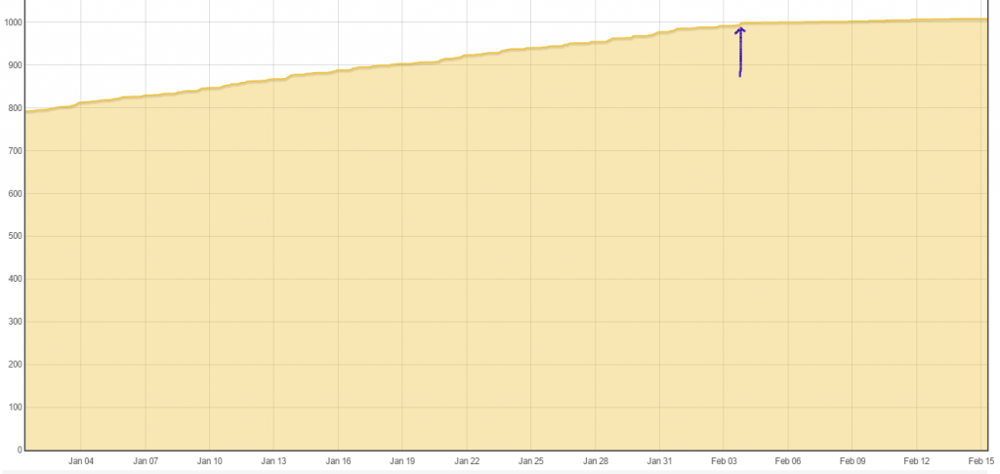

Hi,
I have my power input going to three feeds. wh accumilator, power to kwh/d, and power to kwh. As of Saturday the power to kwh feed has stopped incrementing but the other two feeds are working as expected.
If I create a new feed it increments as expected but if I import my data using the useful script power_to_kwh.php it stops pretty quickly. There seem to be a rounding error from my brief look at the logs. I've just ran the power_to_kwh.php script and here you can see the feed is stuck jumping between 1018.240 and 1018.241.
2015-12-07 17:48:01.140|INFO|feed_model.php|insert_data() feedid=3 updatetime=1449510481 feedtime=1449510481 value=1018.2429833333 arg=join
2015-12-07 17:48:01.142|INFO|PHPFina.php|post() id=3 timestamp=1449510481 value=1018.2429833333 padding=join
2015-12-07 17:48:11.047|INFO|feed_model.php|insert_data() feedid=3 updatetime=1449510491 feedtime=1449510491 value=1018.2408666667 arg=join
2015-12-07 17:48:11.049|INFO|PHPFina.php|post() id=3 timestamp=1449510491 value=1018.2408666667 padding=join
2015-12-07 17:48:21.058|INFO|feed_model.php|insert_data() feedid=3 updatetime=1449510501 feedtime=1449510501 value=1018.241275 arg=join
2015-12-07 17:48:21.059|INFO|PHPFina.php|post() id=3 timestamp=1449510501 value=1018.241275 padding=join
2015-12-07 17:48:31.067|INFO|feed_model.php|insert_data() feedid=3 updatetime=1449510511 feedtime=1449510511 value=1018.2409916667 arg=join
2015-12-07 17:48:31.069|INFO|PHPFina.php|post() id=3 timestamp=1449510511 value=1018.2409916667 padding=join
2015-12-07 17:48:41.075|INFO|feed_model.php|insert_data() feedid=3 updatetime=1449510521 feedtime=1449510521 value=1018.2409916667 arg=join
2015-12-07 17:48:41.077|INFO|PHPFina.php|post() id=3 timestamp=1449510521 value=1018.2409916667 padding=join
2015-12-07 17:48:51.085|INFO|feed_model.php|insert_data() feedid=3 updatetime=1449510531 feedtime=1449510531 value=1018.2412277778 arg=join
2015-12-07 17:48:51.087|INFO|PHPFina.php|post() id=3 timestamp=1449510531 value=1018.2412277778 padding=join
2015-12-07 17:49:01.144|INFO|feed_model.php|insert_data() feedid=3 updatetime=1449510541 feedtime=1449510541 value=1018.2409916667 arg=join
2015-12-07 17:49:01.146|INFO|PHPFina.php|post() id=3 timestamp=1449510541 value=1018.2409916667 padding=join
2015-12-07 17:49:11.108|INFO|feed_model.php|insert_data() feedid=3 updatetime=1449510551 feedtime=1449510551 value=1018.2411722222 arg=join
2015-12-07 17:49:11.110|INFO|PHPFina.php|post() id=3 timestamp=1449510551 value=1018.2411722222 padding=join
2015-12-07 17:49:21.105|INFO|feed_model.php|insert_data() feedid=3 updatetime=1449510561 feedtime=1449510561 value=1018.2410472222 arg=join
2015-12-07 17:49:21.107|INFO|PHPFina.php|post() id=3 timestamp=1449510561 value=1018.2410472222 padding=join
2015-12-07 17:49:31.128|INFO|feed_model.php|insert_data() feedid=3 updatetime=1449510571 feedtime=1449510571 value=1018.2409694444 arg=join
2015-12-07 17:49:31.130|INFO|PHPFina.php|post() id=3 timestamp=1449510571 value=1018.2409694444 padding=join
2015-12-07 17:49:41.129|INFO|feed_model.php|insert_data() feedid=3 updatetime=1449510581 feedtime=1449510581 value=1018.2412666667 arg=join
2015-12-07 17:49:41.131|INFO|PHPFina.php|post() id=3 timestamp=1449510581 value=1018.2412666667 padding=join
2015-12-07 17:49:51.135|INFO|feed_model.php|insert_data() feedid=3 updatetime=1449510591 feedtime=1449510591 value=1018.2409777778 arg=join
2015-12-07 17:49:51.137|INFO|PHPFina.php|post() id=3 timestamp=1449510591 value=1018.2409777778 padding=join
2015-12-07 17:50:01.154|INFO|feed_model.php|insert_data() feedid=3 updatetime=1449510601 feedtime=1449510601 value=1018.2410055556 arg=join
2015-12-07 17:50:01.156|INFO|PHPFina.php|post() id=3 timestamp=1449510601 value=1018.2410055556 padding=join
2015-12-07 17:50:11.137|INFO|feed_model.php|insert_data() feedid=3 updatetime=1449510611 feedtime=1449510611 value=1018.2412222222 arg=join
2015-12-07 17:50:11.139|INFO|PHPFina.php|post() id=3 timestamp=1449510611 value=1018.2412222222 padding=join
2015-12-07 17:50:21.152|INFO|feed_model.php|insert_data() feedid=3 updatetime=1449510621 feedtime=1449510621 value=1018.2412333333 arg=join
2015-12-07 17:50:21.154|INFO|PHPFina.php|post() id=3 timestamp=1449510621 value=1018.2412333333 padding=join
2015-12-07 17:50:31.163|INFO|feed_model.php|insert_data() feedid=3 updatetime=1449510631 feedtime=1449510631 value=1018.241025 arg=join
2015-12-07 17:50:31.165|INFO|PHPFina.php|post() id=3 timestamp=1449510631 value=1018.241025 padding=join
2015-12-07 17:50:41.168|INFO|feed_model.php|insert_data() feedid=3 updatetime=1449510641 feedtime=1449510641 value=1018.2409916667 arg=join
2015-12-07 17:50:41.170|INFO|PHPFina.php|post() id=3 timestamp=1449510641 value=1018.2409916667 padding=join
2015-12-07 17:50:51.161|INFO|feed_model.php|insert_data() feedid=3 updatetime=1449510651 feedtime=1449510651 value=1018.2413138889 arg=join
2015-12-07 17:50:51.164|INFO|PHPFina.php|post() id=3 timestamp=1449510651 value=1018.2413138889 padding=join
2015-12-07 17:51:01.168|INFO|feed_model.php|insert_data() feedid=3 updatetime=1449510661 feedtime=1449510661 value=1018.2409944444 arg=join
2015-12-07 17:51:01.169|INFO|PHPFina.php|post() id=3 timestamp=1449510661 value=1018.2409944444 padding=join
2015-12-07 17:51:11.208|INFO|feed_model.php|insert_data() feedid=3 updatetime=1449510671 feedtime=1449510671 value=1018.241175 arg=join
2015-12-07 17:51:11.210|INFO|PHPFina.php|post() id=3 timestamp=1449510671 value=1018.241175 padding=join
2015-12-07 17:51:21.217|INFO|feed_model.php|insert_data() feedid=3 updatetime=1449510681 feedtime=1449510681 value
If anyone needs a copy of my data or to test a patch let me know.
Thanks,
Kev
Re: emoncms 9.2 - power to kwh feed stopped incrementing
i had the same problem and i described it somewhere near the end of the first page on this thread (openenergymonitor.org/emon/node/11009#comment-35658) it's a huge thread so scroll down till you see my screenshots a bit further in the post. On one of the screenshots you can see a straight line while after recalculating kwh using the script that was gone. This was the same problem as you are describing. Ii also found out the culprit and a solution. basically it's a mysql problem. value is defined as float which has a precision of .XXX which is not precise enough following statements alters the value in the feeds table to be more precise to be 12 points after the decimal point and 14 before
try this statement ALTER TABLE `feeds` CHANGE `value` `value` FLOAT(26,12) NULL DEFAULT NULL;
or ALTER TABLE `feeds` CHANGE `value` `value` DECIMAL(26,12) NULL DEFAULT NULL;
it will change the precision of float or switch to decimal. for more info look up my posts in that thread above
just make sure 26 total digits is enough (the 1st value is total digit's the 2nd number, digit's after decimal point) so this should give you 26-12 14 number before decimal point (could be 13 also if decimal point is included) so 99999999999999.999999999999 is the max value then (for all feeds)
Edit - fixed link to point to relevant comment in thread - Moderator, BT
Re: emoncms 9.2 - power to kwh feed stopped incrementing
Having to edit the DB is one hell of a change. I'd like to know what chaveiro thinks of this issue and fix and how it will affect future updates.
Re: emoncms 9.2 - power to kwh feed stopped incrementing
Hi JumpMaster, there is no problem altering the feeds table to increase precision.
This problem can be mitigated by using redis in alternative.
Anyway can you add this log line to process_processlist.php about line 289 to get more details:
if ($time_elapsed>0 && $time_elapsed<7200) { // 2hrs
// kWh calculation
$kwh_inc = ($time_elapsed * $value) / 3600000.0;
$new_kwh = $last_kwh + $kwh_inc;
$this->log->info("power_to_kwh() feedid=$feedid last_kwh=$last_kwh kwh_inc=$kwh_inc new_kwh=$new_kwh last_time=$last_time time_now=$time_now");
} else {
Re: emoncms 9.2 - power to kwh feed stopped incrementing
Hi,
Thanks for replying Chaveiro. I did previously use redis but must have left it disabled after having to replace the settings.php file.
I changed the feeds table as Joyrider suggested and it did indeed fix the issue. This was easily reverted using update and check database button from the administration menu. I have now enabled redis and hopefully the accuracy will return without having to modify the database.
Thanks for your help,
Kev
Re: emoncms 9.2 - power to kwh feed stopped incrementing
Hi,
I just wanted to confirm that enabling redis seems to have fixed the issue and the kwh is incrementing as expected and matches the kwh/d feed in myelectric or the android app.
Thanks everyone for your help!
Kev
Re: emoncms 9.2 - power to kwh feed stopped incrementing
No problem Kev.
Re: emoncms 9.2 - power to kwh feed stopped incrementing
since not all of us are using redis, any chanse to get more precision on the feed value column in the official version, or would i need to change it myselve with every new emoncms release ?
if redis is used the precision on the last value in redis is probably good enough but if redis is not used mysql is used to get the last value from the feed table and then we can stumble upon this problem.
Since i've seen already 3 people, including myselve and jumpmaster that had this problem when redis is not used it might be a good idea to increase precision on the official version in mysql as well.
Re: emoncms 9.2 - power to kwh feed stopped incrementing
Hi.
On another thread I was advised to make this change because I was having problems with KWh calculations
ALTER TABLE `feeds` CHANGE `value` `value` DECIMAL(26,12) NULL DEFAULT NULL;
But, today I noticed that I was having wrong values again and it was changed again to float.
I suspect that it was the last updates of EmonCMS that "undone" that change.
Wasn't it a good idea to change the distribution to the correct value in order to avoid this kind of errors?
Cheers.
Re: emoncms 9.2 - power to kwh feed stopped incrementing
@CidiRome
this is what i do before each database update i do from a new version i make sure that in \Modules\feed\feed_schema.php the value is not defined as float but as decimal(26,12) instead of float. If you only do the statement in mysql it will revert to float as soon as you hit the update database button in the administration section. making the change in that file above will make sure that it won't revert to float. But it's possible, depeninding how you update your version that you need to do it with each new install
Re: emoncms 9.2 - power to kwh feed stopped incrementing
I haven't been home for a couple of weeks and noticed that my power usage was also so low that it was unbeievable (0.3-0.6kWh/day). I just spent about 2 hours tracking down what was happening, suspecting the PHPFina engine was having a problem with single precision floats. Turns out it is fine, because the running total is actually stored on in the MySQL server! I was trying to go from 1257.77 to 1257.7721511111 and MySQL was doing me a favor and rounding that back to 1257.77 despite there being plenty of bits of precision in a 32 bit float to store that increment.
I couldn't imagine I was the only person with this issue so google brought me here. I actually updated my mysql feeds table to type "double". I really think this should be what emoncms uses as well, because everyone's kWh feeds will fail eventually once the value gets high enough (unless they're using redis).
Re: emoncms 9.2 - power to kwh feed stopped incrementing
Yes, I've noticed the same, since February 3rd/4th my kwh accumulated values have significantly dropped too. See the attached screenshot, from that date onwards the graph almost flattens.
The process has been in place since last September, and the increments have remained fairly consistent since then, until 3/4 Feb. I'm presuming that was the date that I updated emoncms, because nothing else has changed locally....
Something has changed...

I saw this issue flagged in github, but then I'm using Redis so doesn't apply to me.
Paul
Re: emoncms 9.2 - power to kwh feed stopped incrementing
Paul - do you know when you last updated emoncms prior to the "change" ? Could it have been before the 26th Jan?
See "Power to kWh feed playing up" thread too. Despite there being no PV installed (ie no reason for a reverse flow) the log clearly shows the running total reducing slightly in places, having now read this thread I think "rounding" could cause the same effect, if the last value is rounded down and very little is consumed between the "last" and "now" reading then the rounded "last" could well be less than the unrounded "now" value.
2 days ago a comment was added to the feeds db schema that suggests the stored feed precision is linked to this value, shouldn't the precision of this "last value" always be a double to ensure accurate input calculations? I would think we always want highest precision for input calcs regardless of storage size.
Paul
Re: emoncms 9.2 - power to kwh feed stopped incrementing
Paul, afraid not, this is my main system which I don't update that regularly, I'll have a look tonight and see if there is anyway I can get the local update history via git.
i seem to recall that the accumulator only uses MySQL for increments if Redis is not running. I'm running Redis.
Paul
Re: emoncms 9.2 - power to kwh feed stopped incrementing
I have also experienced a problem with power to kWh feed suddenly not counting right.
I have also a powdr to kwh/d on the same input.
When i pull a daily graph from both feeds the graph from the power to kWh shows a couple days with a lot less data counted compared to the graph from the power to kWh/d.
I have since done the database change AND enabled redis.
Seems to count fine now i think. Should check more thorougly now.
Re: emoncms 9.2 - power to kwh feed stopped incrementing
Paul - Possibly, but don't ask me how though!
The trouble is making sense of any info you find, not only will it matter when you updated but also from which branch, when the branches were last merged at the repo, when the changes were merged into the emoncms repo and the original commit date - it's a proper maze! But had you been religiously updating every day (eg a dev machine) then that may of ruled out a link with the other thread.
Paul
Re: emoncms 9.2 - power to kwh feed stopped incrementing
Reference the comment added to the feeds db schema,
'value' => array('type' => 'float'), // use double for more precision, database space will double
Surely the use of float or double can only impact that db table by a max of 4bytes per feed defined, as it only has one "last value" per feed. Since the phpTimeseries engine is hardcoded as 9 bytes per datapoint this field setting cannot effect the file size (on the most space constrained sdcard installs), surely it can only double the storage size of pure SQL feeds.
IF this is the case I suggest the default is made "double" and if any mySQL users are concerned about storage space then reduce the size of the data feeds but not in the feed schema, if it is linked to the "feeds" schema then that link should be removed so that the more precise calcs are always used and then rounded for storage only.
Paul
Re: emoncms 9.2 - power to kwh feed stopped incrementing
Hi pb66, you are correct on your last statement, will only affect mysql feeds.
As a note, use of redis eliminate the problem because last value is cached in it with highest precision.
Re: emoncms 9.2 - power to kwh feed stopped incrementing
I may of found the issue that's caused my problem;
Redis is installed and running, but when I last updated (copying default.settings.php to settings.php) I neglected to re-enable redis in settings, so it was falling back to using MYSQL.
Should the default redis setting be changed to 'true' in default.settings.php?
Paul
Re: emoncms 9.2 - power to kwh feed stopped incrementing
In default.settings.php ? I wouldn't because it's optional and not every body will install redis...
Just ensure your own settings.php is correct for your install options.
Re: emoncms 9.2 - power to kwh feed stopped incrementing
Yup exactly. If you have redis, then enable it in settings.php. If not, then edit the modules/feed/feed_schema.php and switch the float to double and update your schema from the administration page.
I'm not sure why float is used in the database, I know all the feed data storage is float and that's fine, but each feed only has one "last value" in the database so the storage cost of expanding that to double precision is the same as storing /a single point in the feed file/. For systems where we're storing hundreds of thousands of points per feed, storing one more is nothing.
Re: emoncms 9.2 - power to kwh feed stopped incrementing
Agree, but should the process be allowed to run if it's results are grossly inaccurate?
IMO there are two options;
1) Fix MYSQL so that the same results are obtained with, or without Redis.
2) Disable the process if Redis is not installed and enabled.
Consider newbies to emoncms, where does it say that you have to enable Redis for the power to kwh process to work?
Also, as in my case, with the frequent updates to the settings file, it's easy to overlook the Redis enablement, which may not become apparent for some considerable time thereafter...
Thoughts please...
Paul
Re: emoncms 9.2 - power to kwh feed stopped incrementing
I don't think the process is supposed to be grossly inaccurate, or that redis is supposed to be required for this to work. The issue only surfaces at this level (1000 kwh) if your (power usage) * (update frequency in hours) is less than a certain amount. A less frequent update period (say every 5 minutes) or a higher power usage (say 500W) all properly increment the counter At 10,000 total kwh you'll again need an order of magnitute increase in the power usage to keep it ticking on.
Eventually at some point, everyone's kwh feeds will stop updating. This is true for even redis or double precision feed "last values", however for those people it will be when their total accumulated kwh is in the billions (enough to consume 100 kwh a day for over 25,000 years). I think it is really just an oversight because the feeds table is supposed to store tha latest value, which is inserted as an absolute number. With normal feeds eventually the input value will be high enough to tick it to the next rounding point or way beyond. However, in this case the code is trying to do its own tallying and given the size of the increment it just can't overcome rounding errors.
Having redis enabled handles it properly because its datatypes are wide enough. The MySQL feeds table just needs to have its own data type widened to match redis and the precision needed to perform the math that emoncms is trying to do on it.
Re: emoncms 9.2 - power to kwh feed stopped incrementing
What is Redis? I see it mentioned a lot but have no idea what it does.
It is obviously an optional element but why? What are the pros and cons?
I'm on a custom install V 9.2
{edit}
2 other things; How do I know if it is installed and is it a service that should be running?
Cheers
Re: emoncms 9.2 - power to kwh feed stopped incrementing
I don't think the process is supposed to be grossly inaccurate
Well no, but it is grossly inaccurate if Redis is not activated.
Just to give you an idea of the magnitude of error, I've examined the data recorded on the same 'power to kWh' feed over 2 different '10 day' periods, the first with Redis enabled, the second with Redis disabled;
25th Jan - 4th Feb - Redis enabled - 59.1kWh
5th - 15th Feb - Redis not enabled - 8.6kWh
Since re-enabling Redis, the increments are again looking realistic, and as expected.
Paul
Re: emoncms 9.2 - power to kwh feed stopped incrementing
@borpin123: redis is a caching server process, used to store data in RAM instead of a database. If you haven't actively installed it, you don't have it. I don't think it is part of any default distribution. It isn't something made for desktop users and usually is used on server systems as a caching mechanism. For a single user emoncms system, there is no reason to install it because its purpose it is to increase performance on high load systems.
@Paul Reed: I'm noticing the same thing, even with feeds which don't have lot of power running through them. I have a monitored outlet that pulls 50 watts pretty consistently (especially because I haven't been home in 2 weeks).
Calculated 50W x 24h = 1.2kWh/day
Feeds table float, Feb 8-13th: 0.9kWh/day
Feeds table double, Feb 14-15th: 1.2kWh/day
There is a 30% loss due to the rounding down. I've just started this feed a few months ago, but once it reaches the 100 kWh mark it would lose more or stop updating completely.
It really seems to be a no-brainer to just increase the size of the field to 8 bytes in the feeds table. The recent commit that says "database space will double" is technically accurate, the size of the _field_ will double, but the row is 54 bytes at a minimum. This would bump it up to 58 bytes or AT MOST a 7% space increase (it is actually much less because the feed names and node tags add another 15+ bytes). Again, we're on a system that is storing THOUSANDS OF POINTS OF DATA per feed, however seems to be concerned about adding the storage equivalent of a single point to actually make the "power to kwh" feed actually work (redis or not). Doesn't literally every user use the power to kwh feed? One might argue that the storage space of the feed data for that feed is wasted space if the value isn't correct at all! :-D
Re: emoncms 9.2 - power to kwh feed stopped incrementing
@capnbry seems though that redis was originally used to reduce the wear on sd cards. It is also part of the install instructions so I have it installed.
Can I simply enable redis in the settings then reboot?
{edit}
Actually, will enabling Redis solve anything if none of my feeds are sql. They are all phpfina.
Re: emoncms 9.2 - power to kwh feed stopped incrementing
Can I simply enable redis in the settings then reboot?
Yes
Actually, will enabling Redis solve anything if none of my feeds are sql. They are all phpfina.
Yes, if you are using a 'power to kWh' process, no if you aren't. (see the posts above!)
Paul
Re: emoncms 9.2 - power to kwh feed stopped incrementing
O dear not sure why I did not pick up on this earlier! Thanks for all the debugging work
Given that the key here is the last value stored in the mysql feeds meta data table if redis is not present then I cant see an issue with setting the value field to be a double in the feeds table schema as you identified Paul:
https://github.com/emoncms/emoncms/blob/master/Modules/feed/feed_schema....
Would someone running emoncms without redis be able to confirm if changing the datatype here to double and running the emoncms database update to apply the change solves the issue?
'value' => array('type' => 'float'), to 'value' => array('type' => 'double'),
Re: emoncms 9.2 - power to kwh feed stopped incrementing
I don't have a test-bed system at the moment, but have made the necessary changes to my main system (I need to rebuild the feed later anyway!), so I'll report back in a couple of days with the results.
Could do with a few more volunteers to try though!
Paul
Re: emoncms 9.2 - power to kwh feed stopped incrementing
@trystanlea I have been running the code that way since Sunday. @joyrider3774 had suggested that the schema file just be changed and I thought it was a pretty sweet piece of coding that the generator file could just be changed and emoncms could figure out what it needed to change. Brilliant!
Since updating the file to change it to a double type and updating the database, ALL my kwh/day fields are incrementing differently now. The good news is that they are more accurate! I have an outlet pulling a constant 6W,one that pulls 50W pretty consistently, and my whole house power usage.
6w x 24h, was reading <0.1kwh/d, now 0.14kwh/d
50w x 24h, was 0.9kwh/d, now 1.2kwh/d
House (peak 350w), was 0 kwh/d, now 6.9kwh/d
The difference in resolution of error is because of the accumulated kwh value. The house has a much larger total so its error is peaked at recording no data unless the watt usage was high enough. This point would be reached by the other outlets once their values got high enough as well.
I've seen no down sides to the double value in the feeds table and the values I took for granted were calculating out properly actually are accurate now given the fixed power usage while I am away from home!
Re: emoncms 9.2 - power to kwh feed stopped incrementing
I've tried the fix since Wednesday, and with Redis deactivated I'm getting much more realistic readings.
So yes, I would say that it does solve the problem.
Paul
Re: emoncms 9.2 - power to kwh feed stopped incrementing
I have to agree with CaptBry that the float v double decision is a "no-brainer", there is no justifiable reason to not use AT LEAST a double, the size of the persisted data should not be directly linked to the calculation precision, we want the highest accuracy for calculations and the smallest size for storage.
float rounding should only affect persisted datapoints until the rounding ticks over to the next step i.e. from round down to round up for example. Using floats in the calcs could easily result in a low power reading read in frequently always being rounded to the point that a known power consumption could register as zero consumed energy forever, an essential element of an energy monitor is that it monitors energy, wouldn't you agree?
Also see "Rounding on large incrementing counter values" this issue also impact high meter readings as well as small unit/time increments too.
That thread links to "SQL rounds my inputs" which also puts forward a good case for using "decimal" over float or double, I do not like the way floats work in calculations and using decimal should not only eliminate any platform or OS influence due to the defined sizes (something that can affect floats) but it also makes a clear distinction between a value persisted for calculations from those persisted as dataponts, reducing confusion, adding cross-platform consistency and improving accuracy too, what's not to like, especially as there is no downside beyond a few bytes per feed, not per datapoint.
As for the settings, as OEM recommends the use of redis and all it's guides seem to recommend it, it would seem daft to me to then assume no one is using it and default to "not installed", that seems contradictory to me. Given Paul was given no indication that redis was not being used and that Borpin123 was not made aware he could benefit from it, it would seem a better choice to assume it is being used (as recommended) and those that cannot use it (windows & shared servers) disable it, mainly because if it is there is should be used if it isn't there emoncms would raise an error to alert the user "install it or disable it!" rather than fail silently with it installed and not used.
Paul
Re: emoncms 9.2 - power to kwh feed stopped incrementing
The 'master' branch has just been updated to change the database value to a 'double' instead of 'float'.
Don't forget to update your database following a git pull.
Paul
Re: emoncms 9.2 - power to kwh feed stopped incrementing
@pb66, I agree about setting the default to redis enabled and then providing a "install it or disable it" notification, shall I go ahead and do this?
I'd be also happy to change the meta table value to decimal as you suggest Paul if it is the best way to go. What would you suggest for the decimal value? We would need sub Watt hour resolution probably down to around 0.000001 kWh. DECIMAL (20,9)? Should give plenty?
Re: emoncms 9.2 - power to kwh feed stopped incrementing
I do think it's the right thing to do, a double may have the scope for massive numbers but at a cost of precision, to me there is no point having the facility to store 100's of billions of kW's if we cannot see every kW increment, we could just as easily use a megawatt feed instead if the precision wasn't important.
What are the implications of not getting the decimal size right first time? if it can be changed as easy as the float to double I would say lets just try it and see, I would however, probably increase the overall size to allow 20 places to the left of the decimal point to accommodate an unsigned LongLong (Datacode Q) so perhaps (29,9). The 9 seems plenty as that will allow precision down to a microWatt even on a kW feed although there is a recommendation to use 12 decimal places in a few posts towards the end of the first page in the EmonCMS 9.31 | 2016.02.13 released..
will this mean that the accuracy will be greater on a non-redis setup? what defines the data type used by redis, is it governed by the feed meta or will it remain a double?
Would it be possible to consider "double" php datafeeds as mentioned here? perhaps allow other types too, I have various feeds tracking on/off status, this could be done in a single byte char rather than a 4byte float so the data feed could easily be a quarter of the size.
Paul
Re: emoncms 9.2 - power to kwh feed stopped incrementing
@Trystan - didn't want this thread to get buried without a final decision!
Is this to be changed to decimal, or are we sticking with double?
Paul
Re: emoncms 9.2 - power to kwh feed stopped incrementing
Apologies for the delay on this, I have not forgotten. There's more I need to get a handle on here, reading through this page http://php.net/manual/en/language.types.float.php
Thinking aloud: Do we ideally need to avoid floating point math all together and have a bucket that accumulates up to 3600 Joules and then increases a watt hour count which is then stored as a long / unsigned long. I'll do some more reading on this.
If we move over to doing this on the emontx as standard: https://github.com/openenergymonitor/emonTxFirmware/blob/master/emonTxV3...
then the requirement would be to store a watt hour value up to a maximum amount...